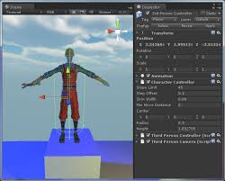

Con esta herramienta se pueden crear juego de mejor calidad y con una gran variedad de ayuda a diferencia de scrath que es un poco mas sencillo y entre otras cosas, puedes llegar no salmente videojuegos, sino animaciones
Caracterizticas del trabajo
- Programacion basica
- Muy dinamico a la hora de porbar el juego
- Puedes utilizar tus proyectos creador en blender para usarlo en unity
